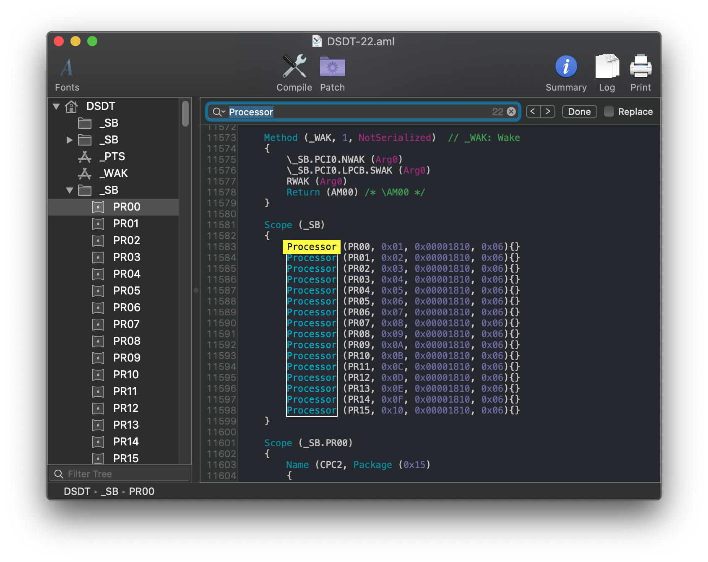
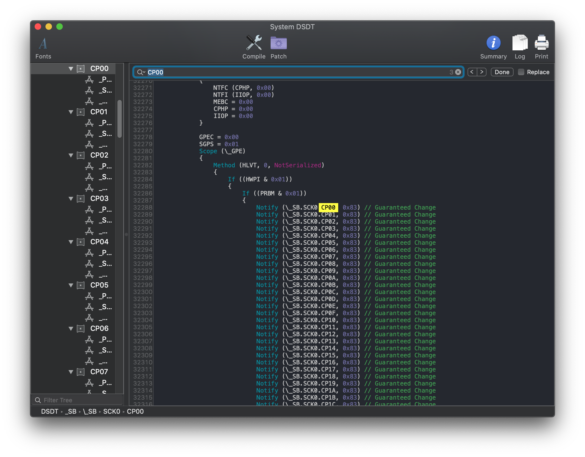
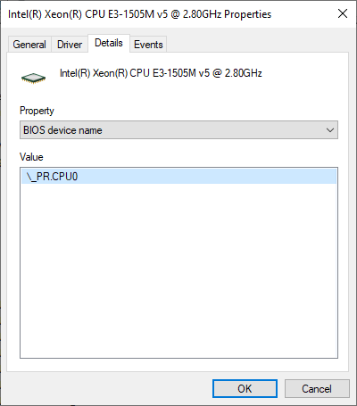
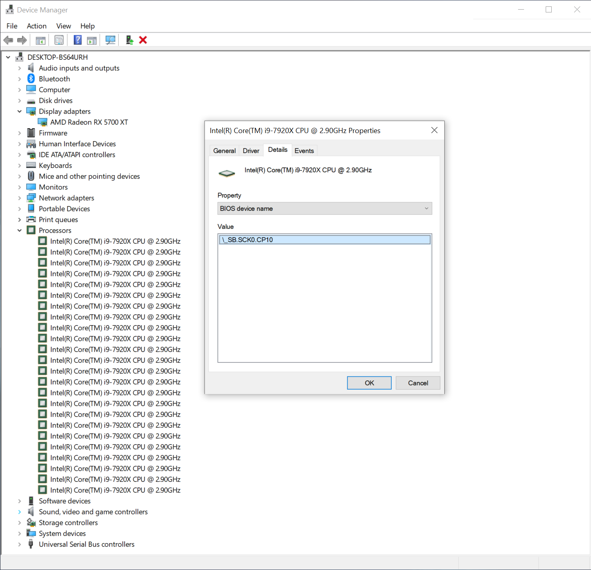
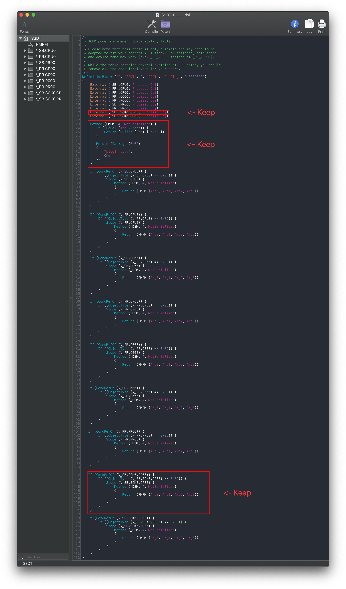
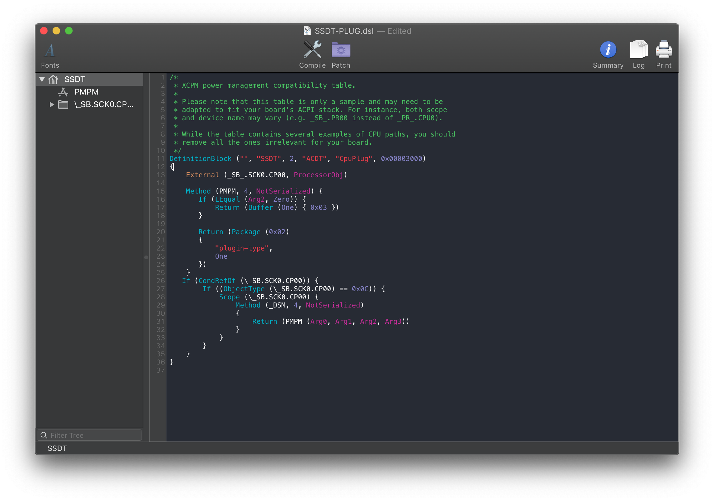

Last modified: Tue Jun 02 2020 13:56:37 GMT+0000 (Coordinated Universal Time)
Fixing Power Management: Manual
Finding the ACPI path
To find the ACPI pathing, you have 2 methods:
DSDT
CPU naming is fairly easy to figure out, first open your decompiled DSDT you got from Dumping the DSDT and Decompiling and Compiling with either maciASL(if in macOS) or any other text editor if in Windows or Linux(VSCode has an ACPI extension that can also help).
Next search for Processor. This should give you a result like this:

As we can see, the first processor in our list is SB.PR00. This is what we'll be applying the plugin-type=1 property too.
X99 and X299 note:
Due to the different DSDT structure of these systems, you'll need to to actually check in multiple places as the pathing isn't as obvious:

If we then search for instances of CP00 we find that its full ACPI pathing is SB.SCK0.CP00:

Now with the pathing, you can head here: Edits to the sample SSDT
DeviceManager
If you already have Windows installed on this machine, finding the CPU pathing is fairly easy.
Start by opening up Device Manager in Windows and looking for a device named Processor. Once found, click on it and select the BIOS device Name entry. You should get something like this:

From the above, we can see that our pathing is PR.CPU0. Pay close attention to the start as PR is important for creating the SSDT
X99 and X299 note:
Odd quirk of DeviceManager in Windows is that the Processor's order does not actually match the ACPI path, instead giving something like SB.SCK0.CP10:

When this happens, you can either:
- Look through and find the lowest value
- Assume the lowest(commonly being
PR00orCP00)
So with the above X299 example, our CPU pathing would be SB.SCK0.CP00
Now with the pathing, you can head here: Edits to the sample SSDT
Edits to the sample SSDT
Now that we have our ACPI path, lets grab our SSDT and get to work:
From the above SSDT, it's very likely your processor is already there. If so, you can delete all the other entries other than yours and the Method PMPM as this is what injects the plugin-type=1 property into our system.
- Reminder: We only need to apply
plugin-type=1to the first thread
For the below example, we'll be using the X299 example(SB.SCK0.CP00)
| Original | Cleaned Up |
|---|---|
|  |  |
Compiling the SSDT
With the SSDT done, you're now ready to compile the SSDT!
Wrapping up
Once you're done making your SSDT, either head to the next page to finish the rest of the SSDTs or head here if you're ready to warp up: